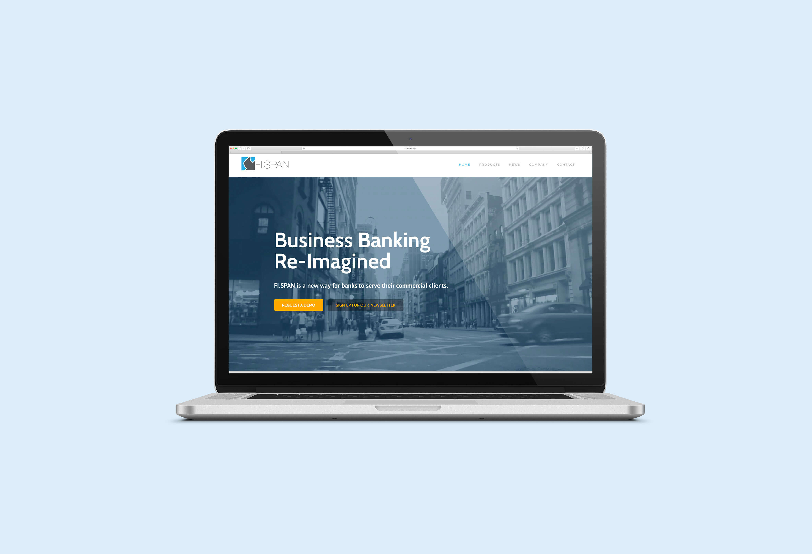

FI.SPAN
FI.SPAN is a fast-growing technology startup that provides a cloud-based API platform which enhances online banking experience among banks, their clients, and FinTech companies. As an UX/UI Developer at FI.SPAN, one of my responsibilities was to redesign the company's corporate website to make it more modernized, user-friendly and professional to potential viewers.
Product Design
As an UX/UI Developer at FI.SPAN, I have an opportunity to work with a team of software developers and business professionals in developing potential product ideas in the conceptual level. From gathering user requirements, analyzing customer user journey, to drafting the initial sketches, I utilized my user experience and interface design skills to ensure the concepts were well articulating. Using Sketch and InVision as primary tools, I created deliverables from rapid wireframes and high-fidelity prototypes, and then presented them for the team to provide feedback for further alterations and possible implementations. My contribution was instrumental for the team to efficiently vision the discussed ideas that allowed flexibility to test on new concepts, at the same time saved the development cost and time.
For more details about the projects, feel free contact me at yneeyjz@gmail.com!
Marketing
Additionally, I also assisted the Business Team on creating marketing assets, including sales collateral, document and email templates, presentation proposal, as well as the the corporate website (www.fispan.com). The new design has provided a refreshed impression on the brand while still maintaining the consideration of the existing brand language.

◀ previous project: GET TALKING CHINESE
next project: PRESSREADER ▶
▲